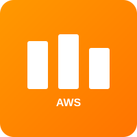
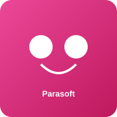
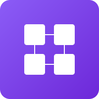
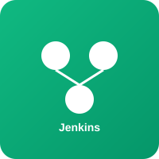

Playwright QE Automation
Built a Playwright-based automation framework integrated with Jenkins CI pipelines for real-time quality validation.
DevOps Engineer
I help enterprises move faster with secure CI/CD pipelines, automation, and cloud-native delivery.

DevOps Engineer with 3.5+ years of experience implementing scalable and secure CI/CD pipelines. Skilled in collaborating with UK/US clients to deliver robust automation and cloud monitoring solutions.
A proactive team player passionate about automating delivery workflows, improving reliability, and building high-impact engineering systems.
CI/CD pipelines for Jenkins, Harness, and GitHub Actions.
AWS automation with CloudFormation, CloudWatch, Lambda, and S3.
Playwright QE frameworks, Parasoft service virtualization, and test automation.
Built a Playwright-based automation framework integrated with Jenkins CI pipelines for real-time quality validation.
Migrated OpenShift build and deployment pipelines from Jenkins to Harness while standardizing workflows.
Built monitoring solutions using CloudWatch, Kinesis, S3, Lambda, Security Hub, and Macie.
Automated AWS infrastructure with CloudFormation for reproducibility and scalable operations.
Architected and deployed a scalable QE automation framework leveraging Playwright with real-time quality gates integrated into Jenkins CI/CD pipelines. Implemented flaky test detection and parallel execution to provide rapid feedback for the QE team.
Executed end-to-end migration of OpenShift Container Platform (OCP) build and deployment pipelines from Jenkins to Harness Continuous Testing. Standardized release workflows, improved deployment efficiency, and reduced pipeline execution time.

Built comprehensive monitoring and logging solutions using CloudWatch, Kinesis, S3, Lambda, Security Hub, and Macie. Fetched unstructured logs, filtered and structured them, stored in S3 with KMS encryption, and responded to security findings proactively.

Created stubs and mock APIs using Parasoft CALisa service virtualization tool. Tested APIs with Postman, enabling agile testing without dependency on external services. Accelerated QA cycles and improved test reliability.

Wrote infrastructure code using AWS CloudFormation to provision and manage cloud resources in a declarative manner. Enabled reproducibility, scalability, and version-controlled infrastructure deployments with automated rollback capabilities.

Developed and maintained automated deployment and testing pipelines using Jenkins with Git integration. Performed Git operations (push, pull, clone, merge) and triggered code pipelines. Proficient in analyzing production issues and providing root cause analysis and fixes.
System Engineer / DevOps Engineer — Oct 2022 to Present
Working with Lloyds Banking Group plc on enterprise DevOps and QE automation
Vellore Institute of Technology — 2020-2022
CGPA: 8.94
Vellore Institute of Technology — 2017-2020
CGPA: 8.59